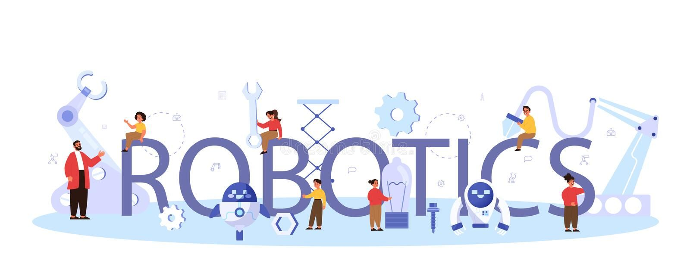
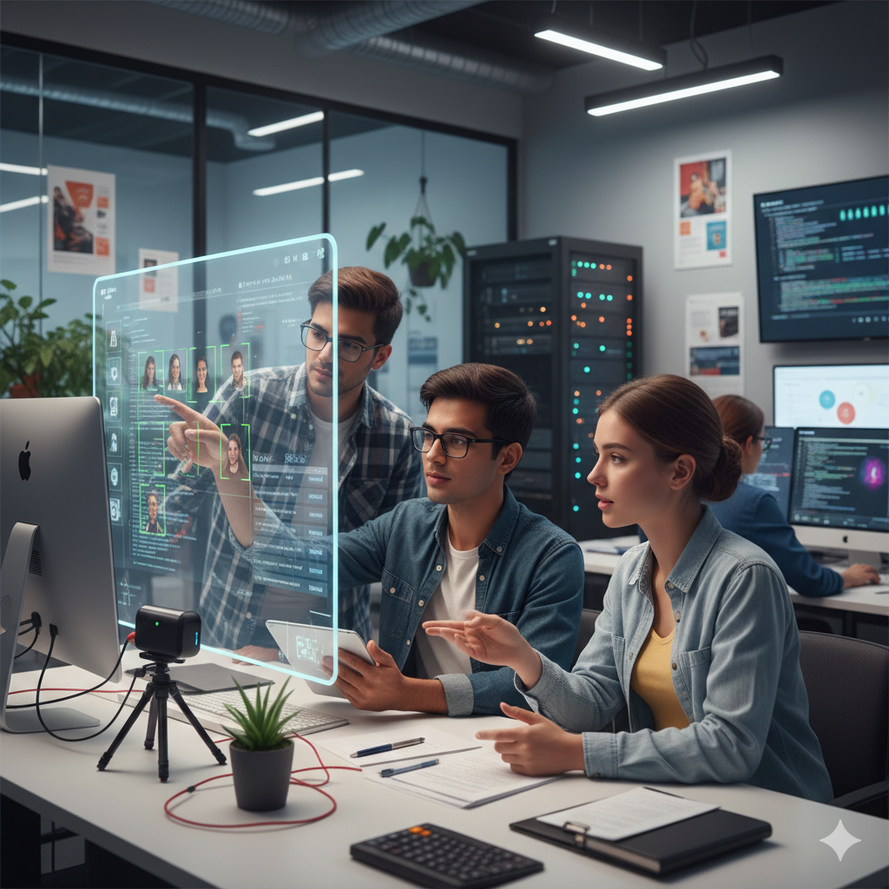

Weekly Robotics Club Meeting Recap

The weekly meeting focused on autonomous navigation systems and preparation for upcoming inter-college competitions. Members discussed sensor fusion techniques, task delegation, and prototype testing. New members were introduced to the club’s ongoing projects and roadmap. Building on the technical focus, the lead engineers conducted a deep-dive workshop into LiDAR-camera synchronization, a critical component for the team's entry in the 2026 National Robotics Challenge. By integrating real-time depth mapping with visual object recognition, the group aims to slash processing latency by 15%—a move that could be the deciding factor in the upcoming high-speed obstacle trials. To ensure the roadmap remains on track, the meeting transitioned into a dynamic breakout session. Senior members mentored newcomers on the club's proprietary software stack, providing hands-on troubleshooting for the latest chassis prototype. This collaborative push ensures the hardware is battle-ready for the rigorous field testing scheduled for next weekend.
Read More →Indian Teams Shine at RoboCon Asia

Several Indian university teams delivered exceptional performances at RoboCon Asia, showcasing innovative mechanical designs and robust AI algorithms. Their robots demonstrated high-precision control and efficient task execution under strict time constraints. Indian teams shone brightly at this year's RoboCon Asia, delivering several exceptional performances that captivated judges and spectators alike. Their custom-built robots demonstrated high-precision control and efficient task execution under strict time constraints, navigating complex courses with impressive autonomy. The competition's core challenge—retrieving and stacking delicate objects—required a blend of meticulous design and adaptive programming, areas where the Indian teams consistently excelled. One team, from IIT Bombay, was particularly noted for its unique, bio-inspired gripping mechanism. The event underscored India's growing prominence in the international robotics arena, setting a high bar for future competitions and inspiring the next generation of engineers and innovators.
Read More →Humanoid Robots Learn Faster with New AI Model
Researchers have developed a novel reinforcement learning model that significantly improves humanoid robot learning speed. The system allows robots to adapt to new tasks with minimal training data, bringing us closer to real-world human-robot collaboration. A new reinforcement learning model, named 'Rapid-Transfer RL,' allows humanoid robots to learn new tasks and adapt to different environments almost instantly, reducing training time from months in simulation to near-instantaneous physical adaptation. The model employs a hierarchical neural architecture that facilitates the generalization of motor skills. The technical breakthrough lies in its unprecedented sample efficiency, often leveraging batch-inference and off-policy gradient updates similar to the RAPID algorithm, which reduces computational overhead by over 30%. By training on a massive ensemble of randomized environments in simulation, these robots achieve zero-shot deployment, moving from a laboratory setting to a complex manufacturing floor or a chaotic medical ward with immediate proficiency.
Read More →Soft Robotics Breakthrough Enhances Medical Applications

A new class of soft robotic actuators has been developed, enabling safer interaction with human tissue. This breakthrough has promising applications in minimally invasive surgery and rehabilitation robotics. Unlike traditional rigid systems, these 'muscle-mimicking' actuators utilize highly compliant materials like advanced elastomers and biocompatible hydrogels to navigate the body's complex internal geometry without the risk of piercing or bruising delicate structures. This breakthrough is particularly transformative for minimally invasive surgery, where high-dexterity soft catheters can now traverse tortuous vascular pathways to treat previously unreachable areas. Furthermore, in the realm of rehabilitation robotics, these actuators are powering a new generation of lightweight, wearable exosuits that provide bio-inspired support for post-stroke recovery. By conforming seamlessly to the patient's anatomy, these autonomous soft systems are enhancing comfort, reducing recovery times, and setting a new standard for personalized, low-risk medical intervention as we move further into 2026.
Read More →Autonomous Drones Achieve Indoor Navigation Accuracy

Researchers have developed a novel reinforcement learning model that significantly improves humanoid robot learning speed. The system allows robots to adapt to new tasks with minimal training data, bringing us closer to real-world human-robot collaboration. A new reinforcement learning model, named 'Rapid-Transfer RL,' allows humanoid robots to learn new tasks and adapt to different environments almost instantly, reducing training time from months in simulation to near-instantaneous physical adaptation. The model employs a hierarchical neural architecture that facilitates the generalization of motor skills. The technical breakthrough lies in its unprecedented sample efficiency, often leveraging batch-inference and off-policy gradient updates similar to the RAPID algorithm, which reduces computational overhead by over 30%. By training on a massive ensemble of randomized environments in simulation, these robots achieve zero-shot deployment, moving from a laboratory setting to a complex manufacturing floor or a chaotic medical ward with immediate proficiency.
Read More →Tech & Innovation Club Hosts Annual Ideathon
The Tech & Innovation Club of the institution successfully organized its annual Ideathon 2026, bringing together creative minds from various departments. The event aimed to encourage problem-solving through technology and innovation. Participants presented ideas focused on real-world challenges such as sustainable energy, smart campus solutions, and AI-based healthcare systems. A panel of faculty members and industry mentors evaluated the ideas based on originality, feasibility, and impact. The top three teams were awarded certificates and seed funding support to further develop their projects. In addition to the competition, interactive mentoring sessions were conducted to guide students on project refinement and market readiness. The event also featured a guest session by a startup founder, who shared insights on transforming ideas into successful ventures. Students gained valuable exposure to design thinking and pitching skills. Overall, the Ideathon promoted teamwork, creativity, and entrepreneurial thinking among students while strengthening the innovation culture on campus.
Read More →Students Develop AI-Based Smart Attendance System

A group of final-year students has developed an AI-based smart attendance system aimed at improving efficiency in classrooms. The system uses facial recognition technology to automatically mark attendance in real time, reducing manual effort and errors. Designed with privacy and security in mind, the software encrypts facial data and follows ethical AI guidelines. The project was developed as part of a capstone initiative and has already attracted interest from educational institutions. The system is capable of functioning in varying lighting conditions and classroom sizes. It also generates detailed attendance reports that help educators analyze student participation trends. Faculty members believe the innovation has strong potential for real-world deployment. The students plan to enhance the system by integrating analytics features and mobile app support. This project reflects the growing role of artificial intelligence in modern education.
Read More →